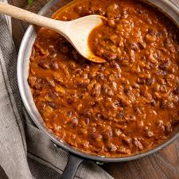

🍛 Rajma (Kidney Bean Curry) Recipe

Ingredients
- 1 cup dried rajma (kidney beans)
- 2 medium onions (finely chopped)
- 2 tomatoes (pureed)
- 1 tbsp ginger-garlic paste
- 1–2 green chilies (optional)
- ½ tsp turmeric powder
- 1 tsp red chili powder
- 1 tsp cumin seeds
- 1 tsp coriander powder
- 1 tsp garam masala
- Salt to taste
- 2 tbsp oil or ghee
- Fresh coriander leaves (for garnish)
Instructions
- Soak rajma overnight. Drain and pressure cook with water and salt until soft (about 5–6 whistles).
- Heat oil in a pan. Add cumin seeds and let them splutter.
- Add chopped onions and sauté until golden brown.
- Add ginger-garlic paste and cook until raw smell disappears.
- Add tomato puree, turmeric, chili, and coriander powder. Cook until oil separates.
- Add cooked rajma along with the water it was boiled in. Mix well.
- Simmer for 15–20 minutes on low flame, stirring occasionally.
- Finish with garam masala and garnish with chopped coriander leaves.
Serve With
- Steamed basmati rice (Rajma Chawal)
- Roti or paratha
- Onion salad and lemon wedges
🍴 Tip: The flavor gets better if allowed to rest for a few hours or served the next day!